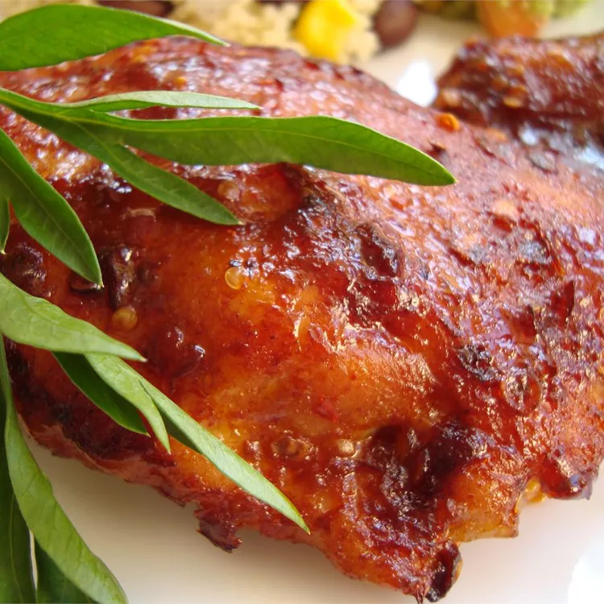

Mexican-American Chicken

My woman is Mexican, and she loves spicy chicken from the supermarket. I was trying to re-create one of the spicy packaged chicken dishes at home; this is what I came up with, and she loves it! It is very spicy, tangy, and easy to make.
Ingridients
- cooking spray
- ½ cup Mexican-style hot sauce (such as Valentina)
- 1 tablespoon paprika
- 1 tablespoon cayenne pepper
- 1 tablespoon brown sugar, or more to taste
Steps
- Preheat the oven to 400 degrees F (200 degrees C). Grease a small baking dish with cooking spray.
- Place chicken thighs in the prepared baking dish. Stir together hot sauce, paprika, cayenne pepper, and brown sugar in a bowl; pour over chicken thighs. Cover the dish with foil.
- Bake in the preheated oven for 20 minutes. Remove the foil and continue baking until chicken is cooked through and sauce has thickened and started to brown, about 20 more minutes. An instant-read thermometer inserted into the center of a thigh should read at least 165 degrees F (74 degrees C).